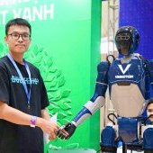

← All members



Undergraduate Student
Thang Tran Viet
Thang Tran Viet is an undergraduate student at PAIRS Lab, VNU-UET. 6 lab publications on human–robot interaction, humanoid robotics and navigation.
Lab publications
Development of a Humanoid Robot Prototype for Multimodal Human-Robot Interaction